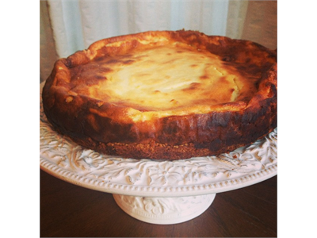

Kohupiima kook
|  |
| Koostisosa |
Kogus |
| Kohupiim |
500 gr |
| Munad |
4 tk |
| Või |
100 gr |
| Nisujahu |
120 gr + 3 spl |
| Suhkur |
200 gr |
| Hapukoor |
200 gr |
| Vaniljesuhkur |
2 tl |
| Sool |
0,25 tl |
- Samm 1
Kuumuta ahi 200°C-ni. Haki või jahuga (120gr) segamini. Lisa 1 munakollane, sool ja suhkur (50gr) ning sega tainaks. Vajuta tainas võiga määritud 26 cm läbimõõduga vormi põhja ja äärtele (seda on hea teha jahuste kätega).
- Samm 2
Täidise tegemiseks vahusta munakollased suhkru (150gr) ja vanillsuhkruga. Sega hulka kohupiim, hapukoor ja nisujahu (3 spl). Kõige lõpuks sega ettevaatlikult hulka kõvaks vahuks vahustatud munavalged. Kalla täidis tainale ja küpseta 30-40 minutit, kuni kook muutub kaunilt kuldkollaseks.
- Samm 3
Enne serveerimist lase koogil täielikult jahtuda, muidu on seda raske tükkideks lõigata.
Link retseptile